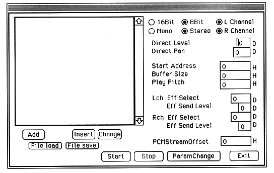

Add, Insert
Enter a new PCM StreamPlay file. AIFF file and BIN file can be selected.
Change
Change only the file without changing the settings such as Direct Level and Direct Pan assigned to the file.
Delete
Delete the entered PCM file with each setting.
File load, File save
Saves the full path of the entered file and the settings assigned to the file to a save file.
Start
PCM Stream Play starts according to the settings.
Stop
Cancel PCM Stream Play.
ParamChange
Change the settings of the currently playing PCM data. Valid parameters for changing the settings are Direct Level, Direct Pan, Play Pitch, left and right Eff Select, and left and right Eff Send level.
Exit
Exit PCM Stream Play mode and close the dialog.